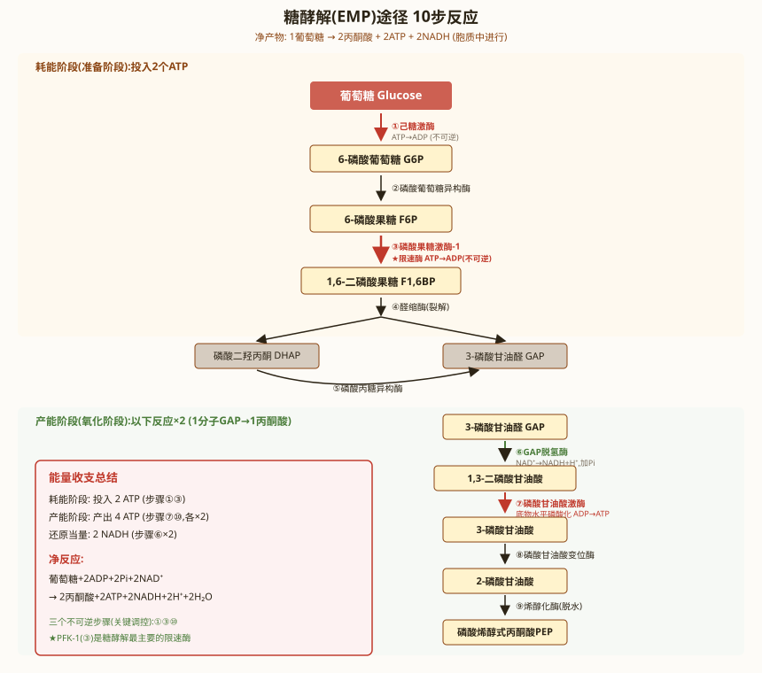

细胞呼吸 · 糖酵解（EMP途径）
一、糖酵解概述
糖酵解（Glycolysis），又称EMP途径（Embden-Meyerhof-Parnas Pathway），是将1分子葡萄糖（6C）分解为2分子丙酮酸（3C）的代谢途径，发生在细胞质中。是生物界最古老、最普遍的代谢途径之一，所有生物（从细菌到人类）都具有糖酵解能力。
总反应式：Glucose + 2NAD⁺ + 2ADP + 2Pi → 2Pyruvate + 2NADH + 2H⁺ + 2ATP + 2H₂O
糖酵解分为两个阶段：
- 第一阶段：能量投入阶段（Energy Investment Phase），6碳糖→2分子3碳糖，消耗2ATP。包括第1-5步反应。
- 第二阶段：能量收获阶段（Energy Payoff Phase），3碳糖→丙酮酸，产生4ATP和2NADH。包括第6-10步反应。
净产能：2ATP（底物水平磷酸化）+ 2NADH（在有氧条件下进入ETC，可产生~5ATP）。

二、糖酵解10步反应详解
第一阶段：能量投入（第1-5步）
第1步：葡萄糖 → 葡萄糖-6-磷酸（G6P）
酶：己糖激酶（Hexokinase, HK）或葡萄糖激酶（Glucokinase, GK）（肝脏中）。辅因子：Mg²⁺（ATP以MgATP²⁻形式为底物）。ΔG°' = -16.7 kJ/mol（不可逆，调控点）。机制：ATP的γ-磷酸基团转移到葡萄糖的C6-OH。这是将葡萄糖"捕获"在细胞内的关键步骤（G6P不能通过GLUT转运出细胞）。
第2步：葡萄糖-6-磷酸 → 果糖-6-磷酸（F6P）
酶：磷酸葡萄糖异构酶（Phosphoglucose Isomerase, PGI）。ΔG°' = +1.7 kJ/mol（可逆）。醛糖（葡萄糖）异构化为酮糖（果糖）。
第3步：果糖-6-磷酸 → 果糖-1,6-二磷酸（F1,6BP）
酶：磷酸果糖激酶-1（PFK-1）。辅因子：Mg²⁺。ΔG°' = -14.2 kJ/mol（不可逆，糖酵解最重要的调控点）。ATP的γ-磷酸转移至F6P的C1-OH。PFK-1是糖酵解的关键限速酶。
第4步：果糖-1,6-二磷酸 → 磷酸二羟丙酮（DHAP）+ 甘油醛-3-磷酸（G3P）
酶：醛缩酶（Aldolase）。ΔG°' = +23.8 kJ/mol（可逆，但产物被快速消耗拉动反应正向进行）。C3-C4键断裂，产生两个三碳糖。DHAP和G3P互为异构体。
第5步：磷酸二羟丙酮 ↔ 甘油醛-3-磷酸
酶：磷酸丙糖异构酶（Triose Phosphate Isomerase, TIM/T PI）。ΔG°' = +7.6 kJ/mol（可逆）。DHAP被迅速转化为G3P，使后续反应（第6-10步）以2分子G3P进行。TIM是催化效率最高的酶之一（k_cat/K_m接近扩散极限，"完美酶"）。
第二阶段：能量收获（第6-10步）
第6步：甘油醛-3-磷酸 → 1,3-二磷酸甘油酸（1,3-BPG）
酶：甘油醛-3-磷酸脱氢酶（GAPDH）。辅因子：NAD⁺。ΔG°' = +6.3 kJ/mol（可逆）。这是糖酵解中唯一的氧化反应：醛基被氧化为羧酸（实际上形成酰基磷酸），NAD⁺被还原为NADH。反应机制：G3P的醛基与酶的Cys残基形成硫代半缩醛→被NAD⁺氧化为硫酯→磷酸解→释放1,3-BPG。1,3-BPG含高能酰基磷酸键（ΔG°'水解≈-49.3 kJ/mol）。
第7步：1,3-二磷酸甘油酸 + ADP → 3-磷酸甘油酸（3-PG）+ ATP
酶：磷酸甘油酸激酶（PGK）。辅因子：Mg²⁺。ΔG°' = -18.8 kJ/mol。
这是糖酵解的第一次底物水平磷酸化：1,3-BPG的C1高能酰基磷酸基团转移给ADP→ATP。注意：这是命名反过来的酶——"磷酸甘油酸激酶"实际上催化1,3-BPG+ADP→3-PG+ATP（即把磷酸从1,3-BPG转移给ADP）。
第8步：3-磷酸甘油酸 → 2-磷酸甘油酸（2-PG）
酶：磷酸甘油酸变位酶（Phosphoglycerate Mutase, PGM）。辅因子：2,3-BPG（作为辅因子维持酶的磷酸化状态）。ΔG°' = +4.4 kJ/mol（可逆）。磷酸基团从C3转移到C2。
第9步：2-磷酸甘油酸 → 磷酸烯醇式丙酮酸（PEP）
酶：烯醇化酶（Enolase）。辅因子：Mg²⁺。ΔG°' = +1.7 kJ/mol（可逆）。脱水反应：2-PG的C2和C3之间脱水形成双键。关键：将低能磷酸酯（2-PG的磷酸酯键ΔG°'≈-17.6 kJ/mol）转变为高能烯醇磷酸酯（PEP的磷酸酯键ΔG°'≈-61.9 kJ/mol）。氟离子（F⁻）与磷酸和Mg²⁺形成复合物，抑制烯醇化酶——临床上用于血液葡萄糖测定（防止采血后糖酵解继续进行）。
第10步：磷酸烯醇式丙酮酸 + ADP → 丙酮酸（Pyruvate）+ ATP
酶：丙酮酸激酶（Pyruvate Kinase, PK）。辅因子：Mg²⁺和K⁺。ΔG°' = -31.4 kJ/mol（不可逆，调控点）。
这是糖酵解的第二次底物水平磷酸化：PEP的烯醇式磷酸基团转移给ADP→ATP。高能烯醇式丙酮酸经互变异构生成稳定的酮式丙酮酸，释放大量自由能（ΔG°'≈-31.4 kJ/mol），远大于ATP合成的需要，使反应不可逆。
PK的调控：
- 肝脏L型PK：受磷酸化调控（PKA磷酸化→失活，胰高血糖素信号→糖酵解受抑→糖异生增强）；受F-1,6-BP前馈激活。
- 肌肉M型PK：不受磷酸化调控。
- ATP、丙氨酸抑制PK；F-1,6-BP激活PK。
糖酵解三个不可逆反应总结：HK/GK（第1步）、PFK-1（第3步）、PK（第10步）。这三个酶也是糖异生途径中需要绕过（bypass）的步骤。
三、糖酵解10步反应总表
| 步骤 | 反应 | 酶 | 辅因子 | ΔG°'(kJ/mol) | 类型 |
|---|---|---|---|---|---|
| 1 | Glucose → G6P | HK/GK | Mg²⁺, ATP | -16.7 | 不可逆，消耗1ATP |
| 2 | G6P → F6P | PGI | 无 | +1.7 | 可逆，异构化 |
| 3 | F6P → F1,6BP | PFK-1 | Mg²⁺, ATP | -14.2 | 不可逆，消耗1ATP，限速 |
| 4 | F1,6BP → DHAP+G3P | Aldolase | 无 | +23.8 | 可逆，裂解 |
| 5 | DHAP → G3P | TIM | 无 | +7.6 | 可逆，异构化 |
| 6 | G3P → 1,3-BPG | GAPDH | NAD⁺ | +6.3 | 可逆，氧化，唯一氧化步骤 |
| 7 | 1,3-BPG → 3-PG | PGK | Mg²⁺, ADP | -18.8 | 底物水平磷酸化，产1ATP |
| 8 | 3-PG → 2-PG | PGM | 2,3-BPG | +4.4 | 可逆，磷酸基团移位 |
| 9 | 2-PG → PEP | Enolase | Mg²⁺ | +1.7 | 可逆，脱水，F⁻抑制 |
| 10 | PEP → Pyruvate | PK | Mg²⁺, K⁺, ADP | -31.4 | 不可逆，底物水平磷酸化，产1ATP |
四、PFK-1的调控
PFK-1是糖酵解的关键限速酶，整合了多种代谢信号：
- 抑制剂：ATP（高ATP→细胞能量充足→不需要糖酵解）、柠檬酸（TCA循环中间产物积累→下游代谢充足）、H⁺（pH下降→乳酸积累→反馈抑制）。ATP降低PFK-1对F6P的亲和力（增加K_m），使F6P饱和曲线从双曲线变为S形（正协同性）。
- 激活剂：AMP（低能量状态的最敏感指标——AMP浓度比ATP变化更剧烈，因腺苷酸激酶反应：2ADP↔ATP+AMP）、F-2,6-BP（果糖-2,6-二磷酸，最强的变构激活剂，由PFK-2/FBPase-2双功能酶合成）。
- F-2,6-BP的调控：PFK-2/FBPase-2是双功能酶——胰岛素（通过蛋白磷酸酶）→去磷酸化→PFK-2活性/FBPase-2失活→F-2,6-BP升高→PFK-1激活→糖酵解增强；胰高血糖素（通过PKA）→磷酸化→PFK-2失活/FBPase-2激活→F-2,6-BP降低→糖酵解减弱。
五、HK与GK的对比
| 特征 | 己糖激酶（HK） | 葡萄糖激酶（GK） |
|---|---|---|
| 分布 | 大多数组织 | 肝脏、胰腺β细胞 |
| K_m(Glucose) | ~0.1 mM（高亲和力） | ~10 mM（低亲和力） |
| 底物特异性 | 广谱（磷酸化多种己糖） | 专一性高（主要是葡萄糖） |
| G6P抑制 | 是（产物反馈抑制） | 否 |
| 诱导 | 组成型 | 胰岛素诱导，饥饿时减少 |
| 生理意义 | 保证基础葡萄糖供应 | 餐后高血糖时摄取葡萄糖 |
| 分子量 | ~100 kDa（单体） | ~50 kDa（单体） |
丙酮酸的去向——糖酵解的终产物丙酮酸在无氧条件下有三种命运：
- 有氧氧化（Aerobic）：丙酮酸→（PDH）→乙酰CoA→TCA循环→完全氧化为CO₂+H₂O。产能：每分子葡萄糖产生~30-32 ATP（真核）或~36-38 ATP（原核）。
- 乳酸发酵（Lactic Acid Fermentation）：丙酮酸+NADH+H⁺→乳酸+NAD⁺。酶：乳酸脱氢酶（LDH）。发生在骨骼肌（剧烈运动，缺氧）、红细胞（无线粒体）、某些乳酸菌。关键：再生NAD⁺，使糖酵解（GAPDH反应）得以持续。
- 乙醇发酵（Alcoholic Fermentation）：丙酮酸→（丙酮酸脱羧酶，TPP）→乙醛+CO₂；乙醛+NADH+H⁺→乙醇+NAD⁺。酶：乙醇脱氢酶（ADH）。发生在酵母和一些植物（缺氧条件下）。同样是再生NAD⁺。
Cori循环（乳酸循环）：肌肉产生的乳酸→血液→肝脏→（LDH）→丙酮酸→（糖异生）→葡萄糖→血液→肌肉。意义：将乳酸中的能量回收，避免乳酸酸中毒。
六、本节核心总结
七、糖酵解的生理意义与相关疾病
糖酵解的生理意义：
- 红细胞：完全依赖糖酵解供能（无线粒体）。糖酵解产生的2,3-BPG（Rapoport-Luebering支路）调节血红蛋白与O₂的亲和力——2,3-BPG浓度升高→Hb-O₂亲和力降低→促进O₂在组织中释放。高原适应和贫血时2,3-BPG升高。
- 肿瘤细胞：Warburg效应（有氧糖酵解）——即使在有氧条件下，肿瘤细胞也优先进行糖酵解产生乳酸（而非氧化磷酸化）。机制：HIF-1α上调糖酵解酶和GLUT表达；PKM2（胚胎型丙酮酸激酶）在肿瘤中高表达。Warburg效应是肿瘤PET成像（¹⁸F-FDG摄取）的基础。
- 脑组织：正常情况下几乎完全依赖葡萄糖的有氧氧化，不能利用脂肪酸（脂肪酸不能通过血脑屏障）。酮体在长期饥饿时可替代部分葡萄糖。
糖酵解酶缺陷症：
- 丙酮酸激酶缺乏症：PKLR基因突变→红细胞PK活性降低→糖酵解ATP生成减少→红细胞膜Na⁺-K⁺泵功能障碍→溶血性贫血。是糖酵解酶缺陷症中最常见的。
- 磷酸果糖激酶缺乏症（Tarui病，糖原贮积症VII型）：肌肉PFK-1缺乏→运动不耐受，肌肉疼痛和痉挛。
- 己糖激酶缺乏症：罕见，导致溶血性贫血。
八、Pasteur效应与糖代谢的激素调控
Pasteur效应（Pasteur Effect）：有氧条件下糖酵解速率受抑制的现象。Louis Pasteur在酵母研究中发现——有氧时葡萄糖消耗速率低于无氧条件。机制：有氧条件下→氧化磷酸化产生大量ATP和柠檬酸→ATP/AMP比值升高+柠檬酸→PFK-1抑制→糖酵解减慢。同时，有氧条件下NADH经ETC氧化→NAD⁺再生充分→不需要乳酸发酵再生NAD⁺。
糖代谢的激素调控：
- 胰岛素（Insulin）：进食后胰岛素分泌增加→①促进GLUT4转位至质膜→葡萄糖摄取增加（肌肉和脂肪组织）；②激活PFK-2→F-2,6-BP上升→PFK-1激活→糖酵解增强；③激活蛋白磷酸酶→PFK-2/FBPase-2去磷酸化（PFK-2活性）和PK去磷酸化（激活）；④诱导GK（肝脏）和PK表达。
- 胰高血糖素（Glucagon）：饥饿时胰高血糖素分泌增加→①cAMP→PKA→PFK-2/FBPase-2磷酸化→PFK-2失活/FBPase-2激活→F-2,6-BP下降→PFK-1抑制→糖酵解减弱，糖异生增强；②PKA磷酸化肝脏L型PK→PK失活→糖酵解受抑；③脂肪组织脂解→脂肪酸释放→肝脏β-氧化→乙酰CoA/NADH/ATP增高→进一步抑制糖酵解。
糖原代谢与糖酵解的衔接：
- 糖原磷酸化酶（glycogen phosphorylase）→糖原+Pi→葡萄糖-1-磷酸→（磷酸葡萄糖变位酶）→G6P→直接进入糖酵解（跳过HK步骤，节约1ATP）。
- 肌肉中糖原→G6P→糖酵解→乳酸（肌肉自身供能）。肝脏中糖原→G6P→葡萄糖（G6Pase催化）→释放入血→维持血糖。肌肉无G6Pase，不能将糖原分解为游离葡萄糖释放入血。
九、糖酵解的历史与实验方法
糖酵解途径的发现史：
- 1897 Buchner兄弟：发现酵母无细胞提取液仍能发酵糖产生酒精——证明发酵不需要完整细胞，"酶"可以在细胞外发挥作用。这是生物化学的奠基性实验，获1907年诺贝尔化学奖。
- 1905-1910 Harden和Young：发现磷酸盐是发酵所必需的，分离出果糖-1,6-二磷酸（Harden-Young酯）。发现无机磷酸盐刺激发酵速率但随后速率下降——证明磷酸化中间体的存在。
- 1930年代 Embden、Meyerhof和Parnas：通过一系列实验阐明糖酵解的完整途径（EMP途径）。Meyerhof获1922年诺贝尔奖（与Hill分享）。
- 1940年 Cori夫妇：阐明糖原磷酸化酶反应和Cori循环。获1947年诺贝尔奖。
糖酵解酶活性的实验测定：
- PFK-1活性测定：偶联反应——F6P+ATP→F1,6BP+ADP，ADP通过丙酮酸激酶和乳酸脱氢酶偶联到NADH氧化（NADH→NAD⁺），在340nm处监测NADH吸光度下降。
- GAPDH活性测定：G3P+NAD⁺+Pi→1,3-BPG+NADH，在340nm处监测NADH吸光度上升。
- 氟化钠采血管抑制糖酵解：NaF→抑制烯醇化酶→阻止2-PG→PEP→防止采血后红细胞继续糖酵解消耗葡萄糖。临床血糖测定的重要原理。
七、糖酵解与疾病
糖酵解相关疾病：
- 丙酮酸激酶缺乏症（Pyruvate Kinase Deficiency）：PK-LR基因突变→红细胞PK活性降低→ATP生成减少→Na⁺-K⁺泵功能下降→红细胞肿胀→溶血性贫血。常染色体隐性遗传。是糖酵解酶缺乏所致溶血性贫血中最常见的一种。
- 已糖激酶缺乏症：HK1基因突变→红细胞HK活性降低→溶血性贫血。罕见。
- 磷酸果糖激酶缺乏症（Tarui病，糖原贮积症VII型）：PFKM基因突变→肌肉PFK-1缺乏→运动不耐受、肌痛、代偿性溶血。运动后血清CK升高。
- 磷酸甘油酸激酶缺乏症：PGK1基因突变→X连锁遗传→溶血性贫血±神经系统症状（智力障碍、癫痫）。
Warburg效应：肿瘤细胞即使在有氧条件下也优先进行糖酵解（有氧糖酵解），由Otto Warburg于1924年发现。机制：HIF-1α激活→GLUT1/GLUT3和糖酵解酶表达上调→PKM2（胚胎型PK）高表达→代谢中间产物用于生物合成（核苷酸、氨基酸、脂质）。FDG-PET（¹⁸F-氟代脱氧葡萄糖PET）利用Warburg效应进行肿瘤成像检测。Warburg获1931年诺贝尔奖。
糖酵解的生理调节：
- 胰岛素/胰高血糖素调控：进食→胰岛素↑→PFK-2（磷酸果糖激酶-2）去磷酸化激活→F-2,6-BP↑→PFK-1激活→糖酵解↑。饥饿→胰高血糖素↑→PKA→PFK-2磷酸化失活→F-2,6-BP↓→PFK-1活性↓→糖酵解↓。
- Pasteur效应：有氧条件抑制糖酵解。机制：有氧→氧化磷酸化→ATP/ADP↑、柠檬酸↑→PFK-1抑制→糖酵解↓。相反，缺氧→Pasteur效应解除→糖酵解加速。
- Crabtree效应：高浓度葡萄糖抑制呼吸作用（与Pasteur效应相反）。某些肿瘤细胞和酵母中观察到。机制：葡萄糖→糖酵解↑→胞质ADP消耗→线粒体ADP减少→氧化磷酸化↓。
必背考点汇总
- 糖酵解定位：细胞质，10步反应，3个不可逆反应（第1/3/10步）
- 10步反应：酶名、辅因子、ΔG°'正负、产物——必须全部背诵
- 三个关键酶：HK/GK（第1步）、PFK-1（第3步，最重要限速酶）、PK（第10步）
- PFK-1调控：ATP/柠檬酸抑制，AMP/F-2,6-BP激活；F-2,6-BP由PFK-2/FBPase-2双功能酶合成，受胰岛素/胰高血糖素调控
- HK vs GK：K_m、分布、G6P抑制、生理意义
- 底物水平磷酸化：第7步（PGK）和第10步（PK），净产2ATP
- 丙酮酸三去向：有氧氧化（TCA）、乳酸发酵（LDH，再生NAD⁺）、乙醇发酵（PDC+ADH，再生NAD⁺）
- 抑制剂：氟化物→烯醇化酶；碘代乙酸→GAPDH
- 净产能：2ATP + 2NADH
高中教材衔接 · 课标对应
【课标对应内容】人教版必修1第5章第3节"细胞呼吸的原理和应用"——糖酵解是细胞呼吸第一阶段，在细胞质基质中进行，将1分子葡萄糖分解为2分子丙酮酸，产生少量[H]（NADH）和ATP。高中阶段只要求学生知道糖酵解的"场所、底物、产物、大致产能"，不要求10步具体反应。选择性必修1第2章"人体的稳态"中关于"能量供应"部分会再次涉及糖酵解的产能意义。高中还涉及"无氧呼吸"的对比——酵母菌产生酒精、动物细胞产生乳酸，都源自丙酮酸之后的去路。
2025 / 2026 联赛 · 初赛真题链接
本章重难点深度解析
重难点 1：糖酵解的10步反应详细机制
- 能量投入阶段（消耗2ATP）：
①葡萄糖 + ATP → G6P（HK或GK，Mg2+）；
②G6P → F6P（磷酸葡萄糖异构酶，PGI，可逆）；
③F6P + ATP → F-1,6-BP（PFK-1，限速，不可逆）；
这一阶段消耗2ATP将葡萄糖"激活"为不稳定的F-1,6-BP。 - 裂解阶段：
④F-1,6-BP → DHAP + G3P（醛缩酶，ALD）；
⑤DHAP ↔ G3P（磷酸丙糖异构酶，TPI，可逆）；
至此1分子葡萄糖变为2分子G3P（因为DHAP↔G3P平衡偏向DHAP约96%，但持续被下游消耗推动平衡移动）。 - 能量产出阶段（产生4ATP + 2NADH）：
⑥G3P + NAD+ + Pi → 1,3-BPG + NADH + H+（甘油醛-3-磷酸脱氢酶，GAPDH，生成高能酰基磷酸键）；
⑦1,3-BPG + ADP → 3-PG + ATP（磷酸甘油酸激酶，PGK，底物水平磷酸化，3-磷酸甘油酸形成）；
⑧3-PG → 2-PG（磷酸甘油酸变位酶，PGAM）；
⑨2-PG → PEP + H2O（烯醇化酶，ENO，脱水形成高能磷酸键）；
⑩PEP + ADP → 丙酮酸 + ATP（丙酮酸激酶，PK，底物水平磷酸化，不可逆）。 - 计量学：2 G3P 走⑥-⑩ → 2 NADH + 4 ATP + 2 丙酮酸；加上投入阶段消耗2 ATP → 净产 2 ATP + 2 NADH + 2 丙酮酸。
重难点 2：糖酵解的调控层级与关键酶
- PFK-1（磷酸果糖激酶-1）：糖酵解的"主控开关"
四聚体变构酶。
抑制剂：ATP（高浓度，结合变构位点，与AMP竞争）、柠檬酸（来自TCA循环，提示产能充足）、H+（酸中毒）。
激活剂：AMP、ADP（低能量信号）、F-2,6-BP（最有效激活剂，Km降低，Vmax不变，K型变构）。
ATP同时是底物和抑制剂——这是"能量充盈"信号。 - HK（己糖激酶）vs GK（葡萄糖激酶）
HK：广泛分布（脑、肌肉等），低Km（高亲和力~0.1mM），高Vmax，受G6P反馈抑制（产物抑制）。脑细胞HK对葡萄糖有高亲和力以保证低血糖时优先获取葡萄糖。
GK：仅肝细胞和胰岛β细胞，高Km（~10mM，Km接近生理血糖5mM），不受G6P抑制。GK的米氏动力学使其在餐后血糖升高时快速磷酸化葡萄糖，促进肝糖原合成。GK受GKRP（GK调节蛋白）抑制，被果糖-1-磷酸激活。 - PK（丙酮酸激酶）的组织特异同工酶
L型（肝）：受胰高血糖素磷酸化抑制（PKA），减弱糖酵解、促进糖异生；被F-1,6-BP前馈激活。
M型（肌肉）：不受磷酸化调节。
PKM2（肿瘤细胞）：低活性二聚体形式促进糖酵解中间物进入生物合成途径（Warburg效应相关）。 - F-2,6-BP的双重调控
由PFK-2（合成F-2,6-BP）/FBPase-2（降解F-2,6-BP）双功能酶调控（同一蛋白，两个结构域）。
餐后（胰岛素高）：PFK-2去磷酸化激活 → F-2,6-BP升高 → PFK-1激活 → 糖酵解↑、糖异生↓。
饥饿（胰高血糖素高）：PKA磷酸化PFK-2/FBPase-2 → FBPase-2激活、PFK-2抑制 → F-2,6-BP降低 → PFK-1失活 → 糖酵解↓、糖异生↑。
重难点 3：NADH穿梭与糖酵解的能量核算
- 胞质NADH的命运：糖酵解产生的NADH在胞质中，无法直接穿过线粒体内膜。必须通过两种穿梭机制之一将还原当量运入线粒体：
①甘油-3-磷酸穿梭（glycerol-3-phosphate shuttle）：主要在骨骼肌和脑。胞质NADH将DHAP还原为甘油-3-磷酸（3-P甘油，胞质酶），3-P甘油穿过外膜到达内膜外侧，被线粒体内膜上的FAD依赖性甘油-3-磷酸脱氢酶氧化为DHAP，FADH2将电子直接进入CoQ池（绕过Complex I）。每个NADH最终生成~1.5 ATP（不是2.5 ATP）。
②苹果酸-天冬氨酸穿梭（malate-aspartate shuttle）：主要在肝、心、肾。胞质NADH将草酰乙酸(OAA)还原为苹果酸（胞质MDH），苹果酸通过苹果酸-α-酮戊二酸反向转运蛋白进入线粒体基质，被基质MDH氧化为OAA并产生NADH（直接进入Complex I）。每个NADH最终生成~2.5 ATP。 - 能量核算（1分子葡萄糖完全氧化为CO2 + H2O）：
糖酵解：2 ATP + 2 NADH（胞质）
丙酮酸脱羧：2 NADH × 2.5 = 5 ATP
TCA循环：6 NADH × 2.5 = 15 ATP + 2 FADH2 × 1.5 = 3 ATP + 2 GTP = 2 ATP
总计（用苹果酸-天冬氨酸穿梭）：2 + 5 + 15 + 3 + 2 = 27 ATP
总计（用甘油-3-磷酸穿梭）：2 + 5 + 15 + 3 + 2 = 25 ATP
经典教科书记载30-32 ATP是基于P/O比3和2（旧值）的算法，现代值约27-29 ATP。 - 无氧糖酵解的能量学：无氧条件下，丙酮酸被乳酸脱氢酶（LDH）还原为乳酸，消耗NADH（再生NAD+以维持糖酵解运转）。净产2 ATP/葡萄糖。缺氧时（如剧烈运动肌肉），糖酵解速率可比有氧时高~100倍以快速供能。
重难点 4：糖酵解与其他代谢途径的连接
- 磷酸戊糖途径（PPP，磷酸己糖支路）：
起点：G6P → 6-磷酸葡萄糖酸内酯 → 6-磷酸葡萄糖酸 → 核酮糖-5-P + CO2 + NADPH。
关键产物：①NADPH（用于还原性生物合成如脂肪酸、胆固醇、ROS解毒）；②核糖-5-P（核苷酸合成前体）；③赤藓糖-4-P（芳香族氨基酸前体）。
氧化相 vs 非氧化相：氧化相生成NADPH，非氧化相进行糖的重排（转酮醇酶TKL、转醛醇酶TAL）。 - 糖异生（gluconeogenesis）：
起点：丙酮酸 → 葡萄糖（主要在肝、肾）。
绕过3个不可逆步骤：①丙酮酸 → OAA（丙酮酸羧化酶，消耗1 ATP + 1 CO2，需要生物素）；②OAA → PEP（PEP羧激酶，消耗1 GTP）；③F-1,6-BP → F6P（FBPase-1）；④G6P → 葡萄糖（G6Pase，仅肝肾有）。
与糖酵解的"反调控"：F-2,6-BP高 → 糖酵解↑、糖异生↓；低则反之。 - 甘油-3-磷酸 → 脂质合成：
DHAP（糖酵解中间物）→ 甘油-3-磷酸 → 甘油脂（TAG）骨架。
乙酰CoA（TCA产物）→ 脂肪酸合成（需要NADPH）→ TAG / 磷脂。
这就是"碳水化合物转化为脂肪"（Chassard现象）的分子基础。 - 2,3-BPG（2,3-二磷酸甘油酸）：
红细胞特有的"旁路"——3-PG → 2,3-BPG（BPG变构酶）→ 2-PG。
2,3-BPG结合血红蛋白T态 → 降低Hb对O2亲和力 → 促进O2释放到组织。
临床：高原红细胞2,3-BPG增加（适应性）、胎儿Hb（γ链）对2,3-BPG亲和力低（保证从母体抢O2）。
重难点 5：糖酵解的进化与Warburg效应
- 进化古老性：
糖酵解途径在所有现存生物（细菌、古菌、真核生物）中高度保守，10个酶的同源物均存在，提示起源于LUCA（最后普遍共同祖先，~3.5-4.2 Ga）。
关键证据：①糖酵解不依赖线粒体（起源于线粒体共生之前）；②核心酶（PGI、GAPDH、ENO、PK）在三域普遍存在；③代谢中间物可由非生物合成（Miller-Urey型实验可在还原性大气下产生丙酮酸等多种有机酸）。 - Warburg效应（1924年，Otto Warburg发现）：
现象：肿瘤细胞即使在有氧条件下也偏向糖酵解产生乳酸（与正常细胞不同，正常细胞有氧时主要走TCA+氧化磷酸化）。
分子机制：①肿瘤细胞线粒体功能损伤（Warburg原假设，已部分被推翻）；②癌基因（c-Myc、HIF-1α、PI3K/Akt）上调糖酵解关键酶（HK-II、PFK-1、PKM2）；③肿瘤细胞表达HK-II（线粒体结合型，逃避G6P反馈抑制）；④p53突变导致TIGAR表达下降，PPP减弱；⑤微环境（缺氧、酸化）进一步偏向糖酵解。
临床应用：FDG-PET（18F-脱氧葡萄糖正电子发射断层扫描）——肿瘤摄取葡萄糖比正常组织高，利用2-FDG不参与进一步代谢（HK磷酸化后无法被GAPDH识别）的特性显像。 - 巴斯德效应（Pasteur effect）：
现象：酵母在有氧条件下糖酵解速率减弱（产物从酒精转为CO2 + H2O）。
机制：ATP积累 → PFK-1抑制 → 糖酵解减弱；柠檬酸进入细胞质 → 进一步抑制PFK-1。
临床相关：肿瘤细胞"反巴斯德效应"——有氧条件下糖酵解仍强（Warburg效应）。